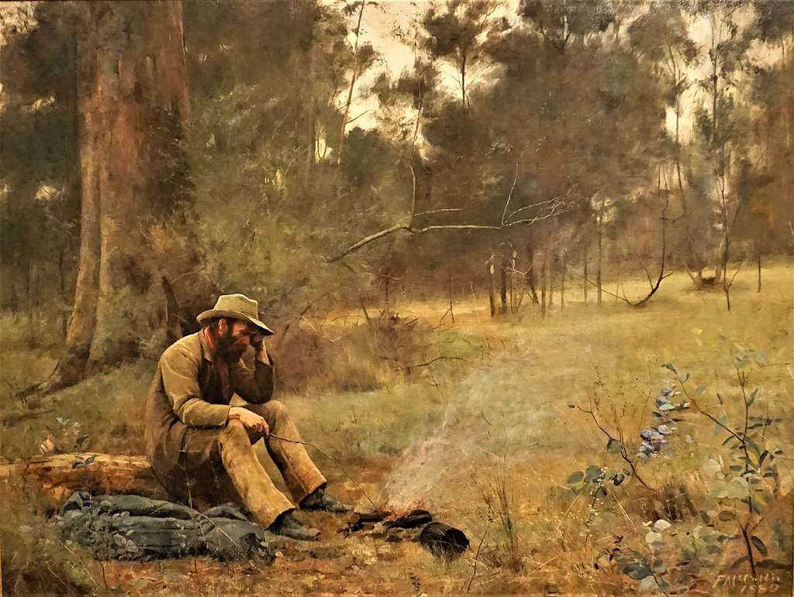

<head>
<meta charset="UTF-8" />
<meta name="keywords" content="drawing, painting" />
<meta name="description" content="drawings by Sunjy" />
<title>Sunjy</title>
<link rel="shortcut icon" type="image/x-icon" href="../../mImages/mCommon/favicon.ico" media="screen" />
<link rel="stylesheet" type="text/css" href="../../mCsses/mCommon/mCssA.css" />
<link rel="stylesheet" type="text/css" href="../../mCsses/mCommon/mCssB.css" />
<link rel="stylesheet" type="text/css" href="../../mCsses/mCommon/mCssC.css" />
<link rel="stylesheet" type="text/css" href="../../mCsses/mCommon/mCssD.css" />
<link rel="stylesheet" type="text/css" href="../../mCsses/mContent/mCssA.css" />
<link rel="stylesheet" type="text/css" href="../../mCsses/mContent/mCssB.css" />
<link rel="stylesheet" type="text/css" href="../../mCsses/mContent/mCssC.css" />
<link rel="stylesheet" type="text/css" href="../../mCsses/mContent/mCssD.css" />
</head>
<script type="text/javascript" src="../../mScripts/mContent/mContentAA.js" /></script>
<script type="text/javascript" src="../../mScripts/mContent/mContentAB.js" /></script>
<script type="text/javascript" src="../../mScripts/mContent/mContentAC.js" /></script>
<script type="text/javascript" src="../../mScripts/mContent/mContentAD.js" /></script>
<script type="text/javascript"></script> 
<script type="text/javascript">
document.write('<div class="mImgAbsolute"></div>');
/*
document.write('<p class="mFontSizeBColor" />From a white paper...</p>');
document.write('<table class="center"><tr><td>');
document.write('');
document.write('</td></tr></table>');
*/
</script>


<script type="text/javascript">
document.write('<p class="mFontSizeBColor" />Down on His Luck</p>');
document.write('<p class="mFontSizeSColor" />“Down on His Luck” by Frederick McCubbin depicts a disheartened swagman or unlucky gold prospector, sitting by a campfire brooding over his luck.<br><br>McCubbin’s iconic paintings of romanticized rural and pioneer life are as famous today as they were with his audiences in the 1900s. According to an 1889 review:<br><br>“The face tells of hardships, keen and blighting in their influence, but there is a nonchalant and slightly cynical expression, which proclaims the absence of all self-pity … McCubbin’s picture is thoroughly Australian in spirit.” <br><br>The surrounding bush is painted in subdued tones, also reflecting the somber and contemplative mood. The scene was located near the Box Hill artists’ camp outside Melbourne.<br><br>Note the prominent eucalyptus plant placed prominently in the foreground and painted in bold detail, reflecting McCubbin’s love of the Australian bush. One can imagine the campfire crackles while birds and cicadas call from the trees.<br><br>“Down on his luck” is one of the first of a series of large-scale figure paintings by McCubbin, inspired by Australia’s early history. The clothing, billy, campfire, and rolled up blanket portrayed in the picture were typical of workers in the bush.<br><br>This image of the prospector or swagman or bush worker offered a certain nobility. Independent of urban demands, breathing the air of the bush, and free to make his own decisions. “Down on his luck,” but with the opportunity that tomorrow will bring better luck.<br><br>Swagman<br><br>A swagman was a transient laborer who traveled by foot from farm to farm carrying his belongings in a swag or bedroll. The term originated in Australia in the 19th-century.<br><br>Swagmen were particularly common in Australia during times of economic uncertainty, such as the 1890s and the Great Depression of the 1930s.<br><br>Many unemployed men traveled the rural areas of Australia on foot, their few meager possessions rolled up and carried in their swag.<br><br>Typically, they would seek work in farms and towns they traveled through, and in many cases, the farmers would provide food and shelter in return for some menial task.<br><br>The figure of the “jolly swagman,” represented most famously in Banjo Paterson’s bush poem “Waltzing Matilda,” became a folk hero in 19th-century Australia.<br><br>Today it is still seen as a symbol of anti-authoritarian values that Australians considered to be part of the national character.<br><br>“Once a jolly swagman camped by a billabong<br>Under the shade of a coolibah tree,<br>And he sang as he watched and waited till his “Billy” boiled,<br>“You’ll come, a-waltzing Matilda, with me.”<br><br>“Waltzing Matilda” is Australia’s best-known bush ballad. The song narrates the story of an itinerant worker, or “swagman,” making a drink of billy tea at a bush camp and capturing a stray jumbuck (ram) to eat.<br><br>When the jumbuck’s owner and policemen pursue the swagman for theft, he declares, “You’ll never catch me alive!” He commits suicide by drowning himself in a nearby billabong (watering hole), after which his ghost haunts the site.<br><br>The original lyrics were written in 1895 and were first published as sheet music in 1903. Extensive folklore surrounds the song and the process of its creation. T<br><br>here are more recordings of “Waltzing Matilda” than any other Australian song on the record.<br></p>');
document.write('<table class="center" /><tr><td>');
document.write('<br>McCubbin’s iconic paintings of romanticized rural and pioneer life are as famous today as they were with his audiences in the 1900s. According to an 1889 review:<br><br>“The face tells of hardships, keen and blighting in their influence, but there is a nonchalant and slightly cynical expression, which proclaims the absence of all self-pity … McCubbin’s picture is thoroughly Australian in spirit.” <br><br>The surrounding bush is painted in subdued tones, also reflecting the somber and contemplative mood. The scene was located near the Box Hill artists’ camp outside Melbourne.<br><br>Note the prominent eucalyptus plant placed prominently in the foreground and painted in bold detail, reflecting McCubbin’s love of the Australian bush. One can imagine the campfire crackles while birds and cicadas call from the trees.<br><br>“Down on his luck” is one of the first of a series of large-scale figure paintings by McCubbin, inspired by Australia’s early history. The clothing, billy, campfire, and rolled up blanket portrayed in the picture were typical of workers in the bush.<br><br>This image of the prospector or swagman or bush worker offered a certain nobility. Independent of urban demands, breathing the air of the bush, and free to make his own decisions. “Down on his luck,” but with the opportunity that tomorrow will bring better luck.<br><br>Swagman<br><br>A swagman was a transient laborer who traveled by foot from farm to farm carrying his belongings in a swag or bedroll. The term originated in Australia in the 19th-century.<br><br>Swagmen were particularly common in Australia during times of economic uncertainty, such as the 1890s and the Great Depression of the 1930s.<br><br>Many unemployed men traveled the rural areas of Australia on foot, their few meager possessions rolled up and carried in their swag.<br><br>Typically, they would seek work in farms and towns they traveled through, and in many cases, the farmers would provide food and shelter in return for some menial task.<br><br>The figure of the “jolly swagman,” represented most famously in Banjo Paterson’s bush poem “Waltzing Matilda,” became a folk hero in 19th-century Australia.<br><br>Today it is still seen as a symbol of anti-authoritarian values that Australians considered to be part of the national character.<br><br>“Once a jolly swagman camped by a billabong<br>Under the shade of a coolibah tree,<br>And he sang as he watched and waited till his “Billy” boiled,<br>“You’ll come, a-waltzing Matilda, with me.”<br><br>“Waltzing Matilda” is Australia’s best-known bush ballad. The song narrates the story of an itinerant worker, or “swagman,” making a drink of billy tea at a bush camp and capturing a stray jumbuck (ram) to eat.<br><br>When the jumbuck’s owner and policemen pursue the swagman for theft, he declares, “You’ll never catch me alive!” He commits suicide by drowning himself in a nearby billabong (watering hole), after which his ghost haunts the site.<br><br>The original lyrics were written in 1895 and were first published as sheet music in 1903. Extensive folklore surrounds the song and the process of its creation. T<br><br>here are more recordings of “Waltzing Matilda” than any other Australian song on the record.<br>" />');
document.write('</td></tr></table>');
</script>


